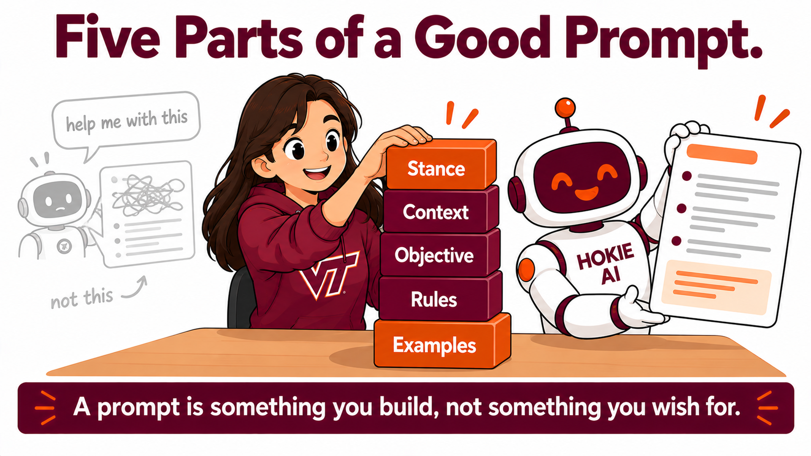

By the end of this lecture, students will be able to:
- Name the five parts of a request, which are stance, context, objective, rules and examples.
- Say which of the five an assistant asks about on its own and which two it does not, and say why it does not ask about those two.
- Say what changes in an answer when stance is supplied, and what changes when an example is supplied.
- Build a request for a task of their own by adding one part at a time, and say which part changed the answer most.
- Compare their own result with a classmate's and account for why the same method gave the two of them different answers.
- Say what they would ask a person before writing a request on that person's behalf.
Last Thursday you answered Hokie AI's questions and got a better chart. Today you find out what it never asks about.
This first section is one you watch. The five part checklist at the end of it gets built out of what happens on the screen.
Your instructor runs this prompt on screen. You do not paste it yourself.
Everything it asked for falls into three groups.
Context is who you are and what has happened. Objective is what you want it to do. Rules are the limits and the must dos.
Your instructor runs this prompt on screen. You do not paste it yourself.
It wrote the message and answered its own questions. You supplied none of it.
Your instructor runs this prompt on screen. You do not paste it yourself.
Count the list. It asked you for four things and it decided about twenty.
Most of what it decided is context it made up. Two of its decisions are not on its own list of questions at all.
It decided what it was being while it wrote. It decided what a good version of this message looks like. It will not ask you for either one.

SCORE. Stance, context, objective, rules, examples.
It never asks what it should be, because it is already being something and does not know that was a choice. It never asks what good looks like, because it already has a picture of that and does not know yours is different.
Nobody writes these five words in a real request. The information has to be in there, in ordinary sentences.
Before the next one:
- Have you ever had AI give you something that was technically correct and still missed what you actually needed? Which of the five was thin that time?
- The message it wrote was fine. Somebody still made about six decisions to get there. Does it matter that it was not you?
- It will not ask you for a stance or an example. Whose job is it to notice they are missing?
A different line of work, the same five parts. One request, and one part goes in per run. You run none of them.
Watch for two different things. On the first three runs, watch what it stops having to ask you. On the last two, watch what changes in the captions themselves.
Your instructor runs this prompt on screen. You do not paste it yourself.
Your instructor runs this prompt on screen. You do not paste it yourself.
Your instructor runs this prompt on screen. You do not paste it yourself.
Your instructor runs this prompt on screen. You do not paste it yourself.
That is a competent answer, and it is exactly what answering its questions gets you.
Now the two it never asks about.
Your instructor runs this prompt on screen. You do not paste it yourself.
Your instructor runs this prompt on screen. You do not paste it yourself.
Carry these into your own run:
- One of the five changed the answer more than the others did here. Would you bet on the same one for a task of your own?
- The example was one caption somebody already liked. Where would you get one for your own task?
Copy this block and paste it into Hokie AI to begin your session.
Your turn. One request of your own, built the same way, in a line of work that is not a coffee shop.
Pick a case from the card below or bring your own. It does not matter which you pick, because the room compares results at the end and the spread is the point.
Stay in one thread for the whole block and use at most twelve exchanges.
Move one. Write your request in one thin sentence and send it as written. Do not improve it first.
If it writes something, that is your starting point. If it asks you questions instead, send your sentence again with this on the end: Do not ask me any questions. Just write it. Move two needs something written before it works.
Move two. Ask it what it decided that you never told it, which is the same question your instructor asked in the first fifteen minutes. Write its list down, because that list is the parts you left out.
Move three. Choose one of the five parts and add only that one. Run it again and say what moved. You choose which part goes in first, and nobody in this room is going to tell you the right answer, because it depends on your task.
Move four. Add a second part, run it again, and say what moved this time.
Move five. Run it one last time and ask what it still does not know about your task. Write down what it names.
Two things to watch for. If your first answer and your second answer look the same, say so in the thread, because a part that changed nothing in your case is a real result and you will be asked about it. And if you added a part and the answer got worse, that is also a result, and it usually means the part you wrote was about you rather than about the task.
- Click Copy opening marker and paste it into Hokie AI to begin this block.
- Interact with Hokie AI: ask questions, explore, respond. All of this exchange belongs to this block.
- When finished, use the Copy closing marker button below to close the block in your thread.
When you have finished your exchange, copy this closing marker and paste it into Hokie AI to close the block.
Everybody in this room ran the same five moves. Nobody got the same answer.
Hands up under the part that changed your answer most. One hand each, and your instructor reads the room out loud.
Then two or three of you say it in one sentence. What your task was, and which part moved it.
If the hands are spread across all five, then which part matters most depends on the task, there is no ranking to memorize, and the skill is working out which part is thinnest in the job in front of you. If the hands pile onto one part, then this kind of task has one part that dominates, and the open question is whether that would hold for a task unlike these.
Take these into the reflection:
- You are about to write a request for a task you have never done before. What do you ask yourself first?
- It never asked you for a stance or an example. Now that you have seen what those two do, how would you notice they are missing next time?
Turn to the person next to you. Say what your task was AND say which of the five parts moved your answer most AND between the two of you, find one reason your answers came out different, or one reason they came out alike.
Three minutes. You each ran the same five moves, so whatever separates your results came from you and not from the method.
Now write your reflection, in your own words and without help from the AI.
Your reflection needs all four of these. Name one thing Hokie AI decided for you that you never told it, and say how you found out AND say which of the five parts you added first and what changed in the answer when you added it AND say which part moved the answer most for you, and whether that was the one you expected AND say which of the five parts you will make sure is in your request the next time you get a task you have never done before, and why that one. Respond to all four.
The fourth is the one that separates a good reflection from an adequate one. Naming a part is not enough by itself. Give the reason, and take the reason from what happened in your own thread today rather than off the card.
Write 80 to 160 words.
Write your response in the box below (target: 80 to 160 words), then click Copy and paste into Hokie AI.
Export this thread as a .txt file, then upload it to the Canvas assignment. Your work is not submitted until Canvas shows your file.
Open the Canvas assignment